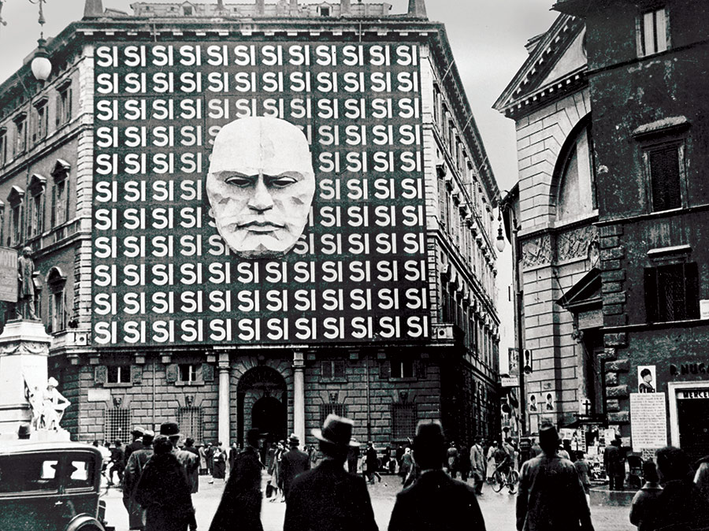

Cos'è il Fascismo. Davvero.

Il Fascimo è senza dubbio uno dei movimenti ideologici che più ha definito e continua a definire la società contemporanea. Capirlo davvero significa riuscire a superare le barriere imposte da preconcetti falsati, spesso opera di tentativi di manipolazione politica operata da gruppi non direttamente fascisti, ma che gioverebbero dall'operazione degli stessi. Oggi il Fascismo è uno strumento per molti, un pericolo per tutti e una realtà ideologica per alcuni. Il Fascismo non si chiuso negli anni Quaranta e non si è chiuso tutt'ora. Iniziamo il nostro percorso utilizzando le conclusioni raggiunte da molti storiografi del fascismo e non, per la maggior parte liberali. Sia ben chiaro al lettore che le sezioni che seguono sono mirate a formulare una definizione di fascismo particolarmente investita di tratti neo-liberali e dunque, seppure non errata in certe sue parti, di certo tutt'altro che esaustiva.
Stanley George Payne, seppur sia un revisionista antisovietico, riesce a trarre alcune conclusioni condivisibili che ci possono aiutare a formulare una base di partenza per una definizione neo-liberale di Fascismo. Payne individua nel Fascismo una promessa di rinnovamento nazionale, operata attraverso l'imposizione di una nuova classe dominante su quella ritenuta obsoleta e che risulta in un nuovo sistema politico. Questo si fonda su una mobilitazione e un tentativo estremo di convinzione delle masse; un uso giustificato ed esaltato della violenza concepita nella peggiore corruzione pseudo-darwiniana a livello istituzionale (che giustifica una militarizzazione estrema) e non. Si annoverano poi l'importanza dell'estetica e del simbolismo, oltre che del mitismo eroico delle masse (annullate) e del leader carismatico e ovviamente autoritario. Per finire, non manca il più feroce anti-femminismo e un accanimento sul ruolò della gioventù, simbolo (nuovamente) del rinnovamento della nazione.
Dall'analisi di Umberto Eco si evincono invece ulteriori punti (non esclusivi però), come il culto della tradizione e il rifiuto della modernità; l'irrazionalismo; l'anti-pacifismo e l'elitismo. Effettivamente il Fascimo opera un difficoltoso, nonché ontologicamente impossibile ed ultimamente fallimentare, tentativo di sintesi tra elitismo e populismo, il cui risultato è all'apperenza paradossale.
Per rincarare la dose sulla pericolosità odierna del fascismo, si fa menzione dei cinque stadi di un regime fascista individuati dallo storico Robert Paxton: l'esplorazione intellettuale e l'accumulo del rancore e dell'insoddisfazione verso l'ordine attuale; la nascita del movimento, coadiuvata dall'immobilismo politico, la polarizzazione e l'inadeguatezza delle alternative; l'arrivo al potere, spesso supportato nella cieca ed ignobile alleanza contro il pericolo Comunista (reale o paventato); l'esercizio del potere e le prime forme di repressione; la radicalizzazione (entropia) e la totale trasformazione delle istituzioni statali. Leggere questo non può che far sussultare tutti i lettori consapevoli dello stato della politica italiana (e nello specifico del suo Governo dalle elezioni del 2022) come anche di quella dell'intera sfera occidentale.
Fare il sunto più di quello che già si è fatto diventa veramente complicato. Ma sbroglieremo l'articolata definizione di Roger Griffin per tentare. Il Fascimo è (con tre clausole annesse) una forma di populismo ultra-nazionalistico. Eppure: (1) Griffin lo identifica come un seme di ideologia, in quanto (2) è declinabile in diverse maniere, spesso molto diverse; e (3) è da considerarsi un movimento palingenetico in quanto intrinsecamente rivoluzionario.
A questo è giunta la storiografia e la teoria politica neo-liberista: un risultato che, tenendo a mente le limitazioni dell'ambiente politico da cui proviene, è da considerarsi veramente eccellente. Per compiere un passo oltre in una fittizia scala a tre pioli, passiamo alle definizioni che il Fascismo stesso si attribuisce. Compiere questo passo non è semplice, in quanto il Fascismo manca di una teoria autoprodotta che sia chiara ed unificata.
La teoria che possiamo universalizzare al microcosmo fascista è quindi molto breve. Prima di tutto è assente un chiaro obiettivo ideologico da perseguire (diversamente da moltissime ideologie), se non un confuso concetto di "grandezza" della nazione. Tutte le altre caratteristiche del Fascismo che sono autodichiarate sono in matrice negativa: il Fascismo non è nulla se non ciò a cui si oppone. Esso stesso si definisce: anti-democratico, anti-liberale, anti-capitalista, anti-conservativo, anti-individualista e (immancabilmente) anti-marxista.
A complicare il nostro lavoro si aggiunge qualcos'altro: la continua ipocrisia e mancanza del Fascismo di rispettare i suoi stessi presupposti. È per questo che proprio al Fascismo si può applicare un approccio conoscitivo diverso dalla maggioranza delle ideologie (tra cui quella Comunista stessa in molti casi), ovvero analizzare (anche se non esclusivamente, come dimostrato fin'ora) le sue applicazioni. Tale eccezione è resa necessaria dalla suddetta assenza di teoria e resa possibile dalla sovrapposizione storica di teorici ed applicatori del Fascismo (coincidenza non sempre scontata).
Questi punti di rottura con le ideologie del mondo circostante dichiarate dal Fascismo sembrerebbero confermare il suo affermarsi come teoria rivoluzionaria ed incompatibile, se solo coincidessero con la realtà dei fatti. Come detto in precedenza, la coincidenza tra teorici del Fascismo e suoi esecutori, oltre che la totale sovrapposizione temporale dei due periodi di operazione, porta alla conclusione che il disallineamento tra teoria e pratica non è risultato di una corruzione degli ideali originari avvenuta in corso d'opera e successivamente riconosciuta (come è avvenuto, non senza dibattiti, all'interno del Comunismo), bensì una scelta deliberata di azione retorica a fini populistici operata dagli artefici del Fascismo. In definitiva, non si può (e in effetti raramente lo si fa) definire il Fascismo per ciò che si professa, ma solo per ciò che ha fatto e quindi ciò che è.
Osserviamo quindi i fatti. Il Fascismo fu solo alcune cose che dichiarò di essere, mentre fu tutto il contrario di altre. Il Fascismo non fu il primo promotore dell'anti-marxismo e non è neanche detto che fu il più feroce a tal proposito, ma è certo che lo fu ininterrottamente e convintamente. Il Marxismo era il pericolo maggiore del Fascismo, ma si trovò circondato dalle democrazie liberali, che hanno sempre preferito aiutare i neri pur di far crollare i rossi. È anche in questa alleanza che il Fascismo tradì le proprie parole: la democrazia venne effettivamente ostacolata, ma il discorso è decisamente diverso per il lato economico.
Proprio le economie fasciste sono quel punto che la storiografia neo-liberale maggiormente fatica (o finge di faticare) a comprendere, analizzare ed ammettere. Il Fascismo salì sempre al potere con il più grande supporto del ceto proprietario. Il Fascismo non sarebbe stato nulla senza il Capitale. Una volta al potere, ogni forma di Fascismo esercita la più forte repressione sui movimenti rivoltosi dei lavoratori e dei proletari, difendendo i diritti dei proprietari, che non vengono espropriati ma, al contrario, premiati, per il loro aiuto prima e la loro fedeltà poi, dal regime. Anche a livello sociale, con il mantenimento della famiglia patriarcale, il Fascismo si rivelò marcatamente conservativo, nonostante si dichiarasse rivoluzionario in ogni campo. Il Fascismo non rivoluzionò, anzi, per i lavoratori tornò solo indietro: come analizzato da Lorenzo Battisti, nel Ventennio il Fascismo portò indietro i lavoratori italiani di 30 anni.
L'analisi Marxista (operata in larga parte da Lenin) è quindi quella che giunge alla conclusione più esaustiva. Il Fascismo viene identificato come una dittatura borghese, in cui solo le forme di parlamentarismo democratico vengono abolite (o, anzi, riformate), ma nulla della vera struttura sociale borghese sottostante viene alterato. Le classi vengono mantenute; i mezzi di produzione rinsaldati nelle mani delle corporazioni e dello stato collaboratore. Fascismo non è che capitalismo in declino, marcescente. Si può forse affermare che sia l'acutizzazione del capitalismo stesso e delle sue contraddizioni.
In quanto mera evoluzione del Capitalismo, il Fascismo non dovrebbe sorprendere neanche nelle sue più brutali traduzioni, in quanto non è in realtà tanto distante dal suo progenitore. Per usare le illuminanti parole di William Edward Burghardt Du Bois: "Non ci fu atrocità Nazista dei campi di concentramento... che la civiltà Cristiana d'Europa non avesse già praticato a lungo contro le popolazioni di colore in tutte le parti del mondo in nome di una Razza Superiore".
Editoriale27 Agosto 2024